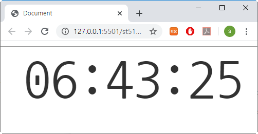

전자 시계를 만들면서 React의 클래스 컴포넌트 만드는 방법을 학습한다.
1. 클래스 컴포넌트를 만드시오.
컴포넌트명: ElectronClock
2. JSX 에서 style 작성법을 학습한다.
font-size: 80pt;
3. 현재 시간 얻는 방법:
const d = new Date();
const h = d.getHours();
const m = d.getMinutes();
const s = d.getSeconds();
4. 매초 렌더링의 개념을 익한다.
window.setInterval(함수, 시간) 사용
기능 추가 :
오전인 경우 숫자앞에 0 붙이고 마지막 2개 글자 추출하기 : substr()
var href = "004";
var ext = href.substr(-2); // href.substr(href.lenght-2, 2);
작업순서
1. "rt07-13.ElectronClock" 예제에서
setInterval() 부분을 컴포넌트 안으로 옮기시오.
"rt13-03.TickTock" 예제 참조
